Dr. Öğr. Üyesi Ramazan Özgür Doğan
Trabzon Üniversitesi · Yapay Zekâ Mühendisliği · PharmAI KTÜ
Uygulamalı Eğitimle Sağlık Araştırmalarında Yapay Zekâ ve Hukuki Çerçevesi
HaCaT deri hücresi kültürü
14:00 dersindeki veri setimiz
İmikimod ile sedef benzeri fare modeli
bugünün veri seti: PCL-PASI
Hastada PASI skoru
tedavi kararı, klinik çalışma
Kronik, bağışıklık aracılı, bulaşıcı olmayan bir hastalık. Dünyada en az 100 milyon kişiyi etkiler (DSÖ, 2016).
Bir vücut bölgesi seçin ve kaydırın.
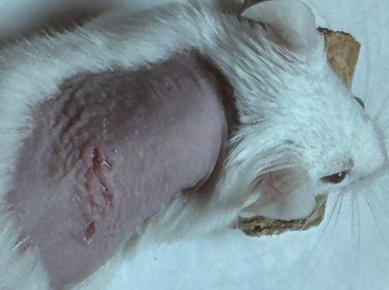
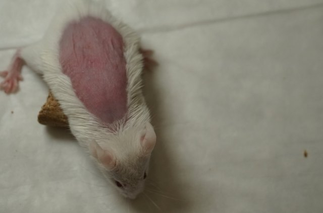
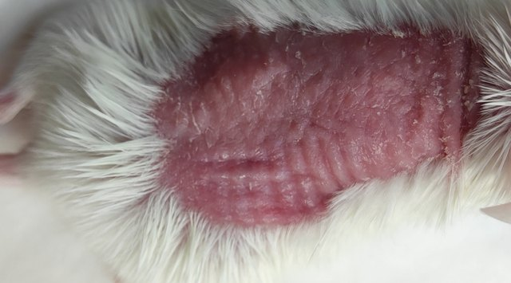
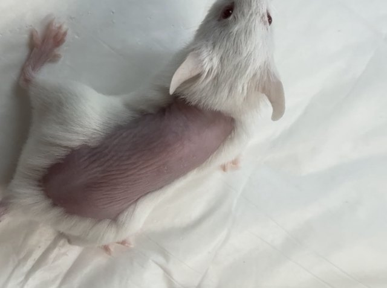
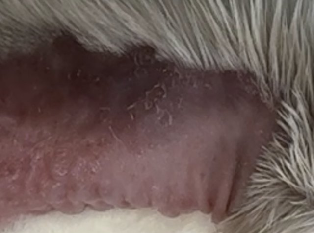
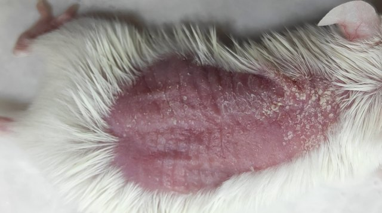
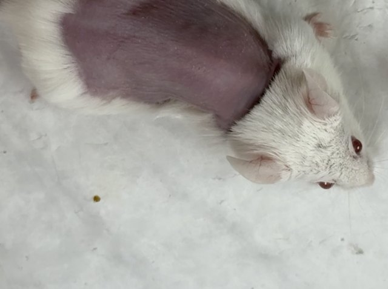
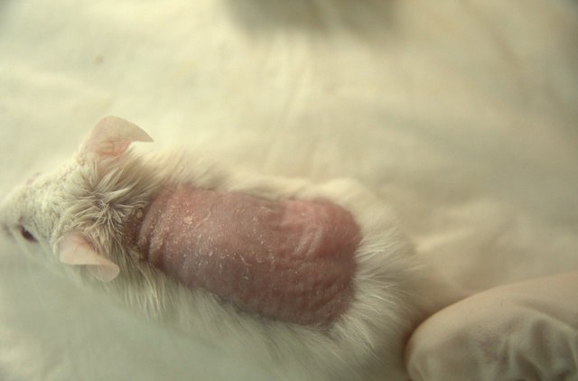
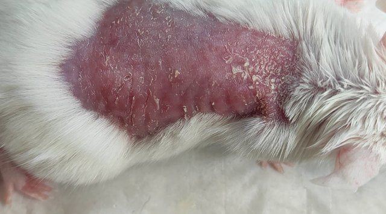
Literatürde farede her belirti genellikle 0–4 ölçeğiyle puanlanır (van der Fits ve ark., 2009). PCL-PASI, görüntüden öğrenmeyi kolaylaştırmak için 3 seviyeli sade bir ölçek kullanır.
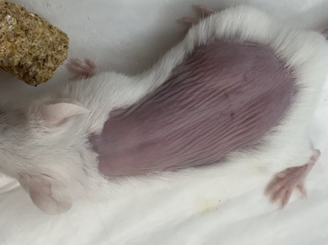
Salonla birlikte karar verin, sonra uzmanın skoruyla karşılaştırın.
Yeşil çerçeve = uzmanın skoru.
Temsili animasyon
🧴 Model: tıraşlı sırt derisine imikimod kremi → sedef benzeri lezyon (van der Fits ve ark., 2009)
📸 Her gün: 3 farklı cihazla seri çekim, aynı ortamda
📝 Her gün: uzman E / T / S skorları · etik onay 2024/33
Tüm görüntüler genişliği 1024 piksele indirildi; her cihazın kendi en-boy oranı korundu.
📁 data/: parquet parçaları (görüntü + kayıt birlikte)
🏷️ metadata.parquet: yalnız etiketler (~340 KB)
✂️ splits.json: resmi birey düzeyinde bölme
Üç skorda da çoğunluk “hafif”.
“Şiddetli” sınıf azınlıkta: görüntülerin yalnız %14–19'u.
📄 Veri setleri artık makale gibi yayımlanıyor ve atıf alıyor. Laboratuvar emeğiniz bilimsel çıktıya dönüşür.
Model hastalığı mı öğreniyor, yoksa fareyi mi tanıyor?
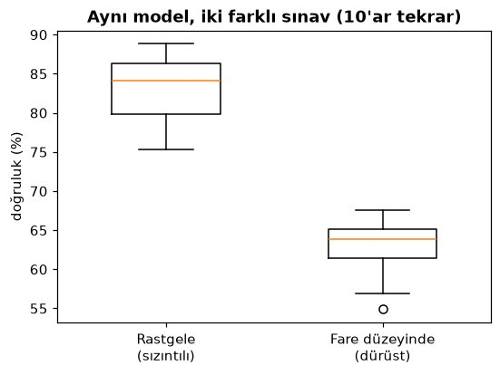
🕵️ Aynı yöntemle bu kez farenin kimliğini tahmin ettirdik: %49 doğru. Şansla tutturma: yalnız %2,3 (43 fare).
🏥 Klinikte de aynı tuzak: aynı hastanın sağ-sol gözü, aynı lezyonun farklı açıları, aynı biyopsinin kesitleri… ya hepsi eğitimde ya hepsi testte.
🎓 Transfer öğrenme: model önce milyonlarca günlük fotoğrafla “görmeyi” öğrenir, sonra az sayıda deri fotoğrafıyla uzmanlaşır.
🔁 Eğitimde her turda (epoch) tahminler uzman etiketine yaklaştırılır. (Sağdaki çubuklar temsili eğitim animasyonu.)
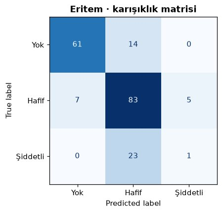
⚠️ Bunlar 565 görüntülük demo ve en basit model (dondurulmuş ResNet-18 + lojistik regresyon) sonuçları; makaledeki sonuçlar değil.
KTÜ Hayvan Deneyleri Yerel Etik Kurulu, 2024/33. Fotoğraf çekimi rutin tutuş dışında ek müdahale içermez.
Azaltma (Reduction): paylaşılan bir veri seti, aynı soru için yeni hayvan deneyi ihtiyacını azaltır.
Başvuru ile, elle onay. Hakem sürecinde erişim verilmiyor; kabul sonrası değerlendirilecek.
Fare modeli insana doğrudan aktarılamaz. Lisans: CC BY-NC 4.0 (ticari olmayan).
Sedef fare modelinde çok görevli, çok cihazlı görüntü veri seti. 24.766 görüntü, E/T/S skorları.
kapılı · CC BY-NC 4.0Düz kas kasılabilirlik sinyalleri → farmakolojik ajanların etki mekanizmasını tahmin (ICCTA 2026).
kapılıHerkese açık örnek görseller ve dağılım grafikleri (bu sunumdaki örnek fotoğraflar).
açıkLaboratuvarınızdaki görüntü, sinyal ya da skor verisi bir sonraki veri seti olabilir.
Laboratuvarınızdaki deney yarın bir yapay zekâ projesi olabilir mi?
17:00'de ikinci Colab defterinde buluşuyoruz:
📦 pcl_pasi_demo.zip (~12 MB): images/ · demo_metadata.csv · full_labels.csv · OKU_BENI.txt
🗓️ 6 gün (1, 3, 5, 7, 9, 11) · her oturumdan 3 kare (ikisi ardışık!) · çoğunlukla iPhone · genişlik 384 px
tum.groupby("camera_id").erythema.mean() yazın. Kameralar arasında skor farkı var mı?Model grubundan bir farenin sırt derisi gün gün nasıl değişiyor?
7. günde iki grup yan yana: fark çıplak gözle bile belli mi?
Aynı fare aynı anda: renk, ışık ve keskinlik ne kadar değişiyor?
🔒 Veri seti kapılı olduğu için bu fotoğraflar sunumda değil, yalnız eğitim defterinizde. Yorumlarınızı salonla paylaşın!
fare değişkenine başka bir model faresi verin ("S13"–"S18") ya da 7. gün yerine başka bir gün seçin.Sunumdaki 15 örnek fotoğrafta canlı hesap: fotoğrafın ortasından bir parça alıp kırmızı ile yeşil kanal farkının ortalaması.
Seçilmiş 15 “vitrin” örneğinde ilişki güçlü görünüyor. Defterdeki 565 gerçek görüntüde ise Spearman yalnız 0,29: ışık, kamera, kürk, arka plan karışıyor. Küçük ve seçilmiş örnekler yanıltır!
n_neighbors=1 → 5 yapın. Fark kapanıyor mu?test_size=0.3 → 0.5. Eğitimde daha az fare kalınca ne oluyor?| skor | doğruluk | makro F1 |
|---|---|---|
| Eritem | 0,747 | 0,564 |
| Kalınlık | 0,768 | 0,626 |
| Pullanma | 0,675 | 0,663 |
C=0.05 → 1.0 yapın (daha az düzenlileştirme). Test başarısı artıyor mu, azalıyor mu?camera_id == "CAM3" satırlarıyla eğitip sınayın.Belirgin kızarıklık, temiz arka plan, iyi ışık.
Sınırdaki vakalar (1 mi 2 mi?), gölge, kürkle örtülü bölge.
Bazı “hatalar” aslında etiketin tartışmalı olduğu örnekler olabilir.
Her veri seti bir laboratuvar sorusuyla başlar.
Etiket = uzman emeği; rehber + uyum şart.
Her zaman birey / hasta düzeyinde bölün.
Cihaz, ışık, protokol: kaydedin.
Sağlıkçı + bilgisayarcı = güçlü proje.
Sorular, işbirliği fikirleri, hayalinizdeki veri seti…
pharmaiktu.github.io · doganr.com
Teşekkürler! 🙏